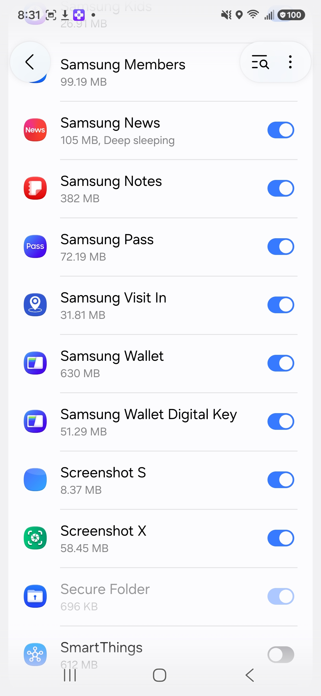
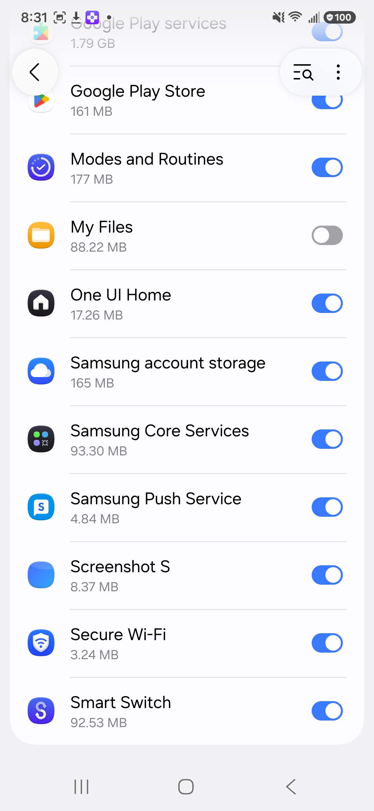
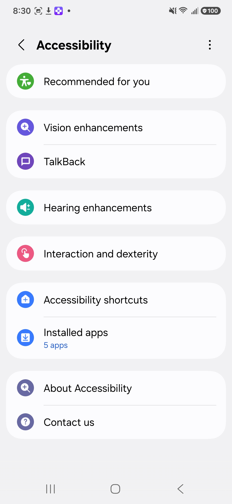
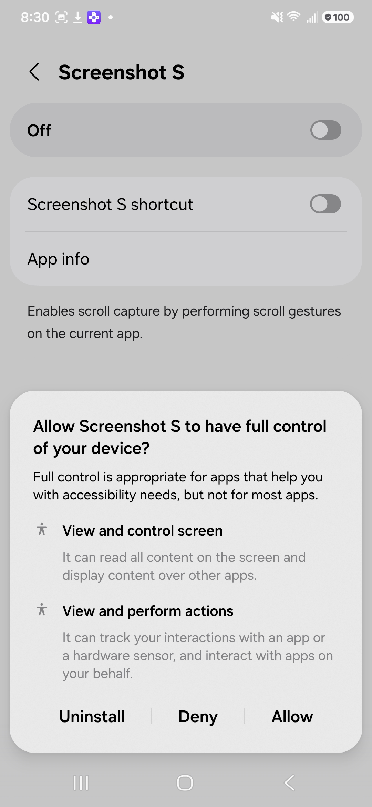
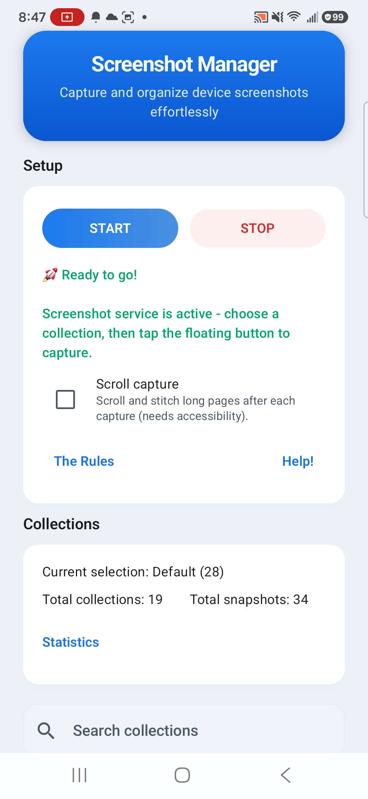
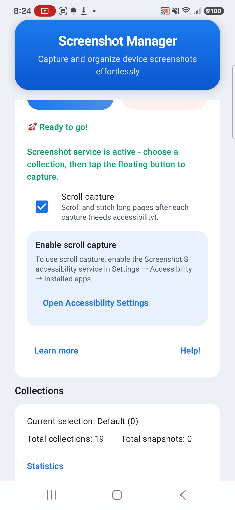

Thanks for helping make AI better, one screenshot at a time. 📷
This quick guide walks you through setup and the two ways to capture. It takes a couple of minutes — then you're collecting.
Your privacy comes first: the app never uploads anything. Every screenshot stays on your phone. You collect, you zip and upload them yourself, and then you can delete the app. That's it.
🔐 First, a few permissions
Android asks for these one at a time. Don't worry — nothing leaves your device. Each one just lets the app do its job. Tap Allow as they come up.
Display over other apps
Usage access
Accessibility service scroll mode only
Photos & media
Notifications
Record screen









← swipe to see all the prompts. They'll look much like this on your phone.
🗂️ Set up a collection
Collections are just named folders that keep your screenshots organized. Pick one of the built-in categories or make your own.
- Open the app. You'll see the main screen with the setup card and your collections.
- Pick a collection from the list, or tap Add Collection, type a name, and save it.
- The selected collection is highlighted — everything you capture goes there until you switch.

📸 Capture: simple snap
The default mode. One tap of the floating button grabs whatever's on screen.
- Open the app or website you want to capture.
- Tap the floating capture button. The screenshot saves to your selected collection.
- A little "Saved in {collection}" chip confirms it. If you turned on Ask before saving, you'll get a preview with Yes / No first.

📜 Capture: scroll & stitch
For long pages — chats, feeds, articles. The app scrolls for you and stitches the frames into one tall image.
- Turn on Scroll capture in the setup card. The first time, you'll be asked to enable the accessibility service.
- Tap the floating button for the first frame. A bottom toolbar appears.
- Tap ↓ Scroll & capture as many times as you need, then tap ✓ Done (or tap outside the toolbar).
- The stitched image saves to your collection — same "Saved in {collection}" confirmation.

⚙️ About & settings
The About screen (the Help! button on the main screen) is home to the extras.
Zip & export
Browse
Language
Image format
Ask before saving
Strip scroll nav bar
Stats


🎉 You're all set
Collect a varied batch, zip it, and upload to the shared repository. When you're done, you can simply delete the app — nothing was ever stored anywhere but your phone.